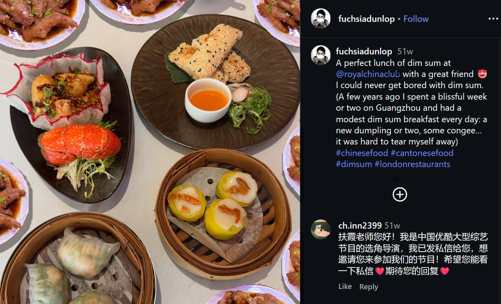
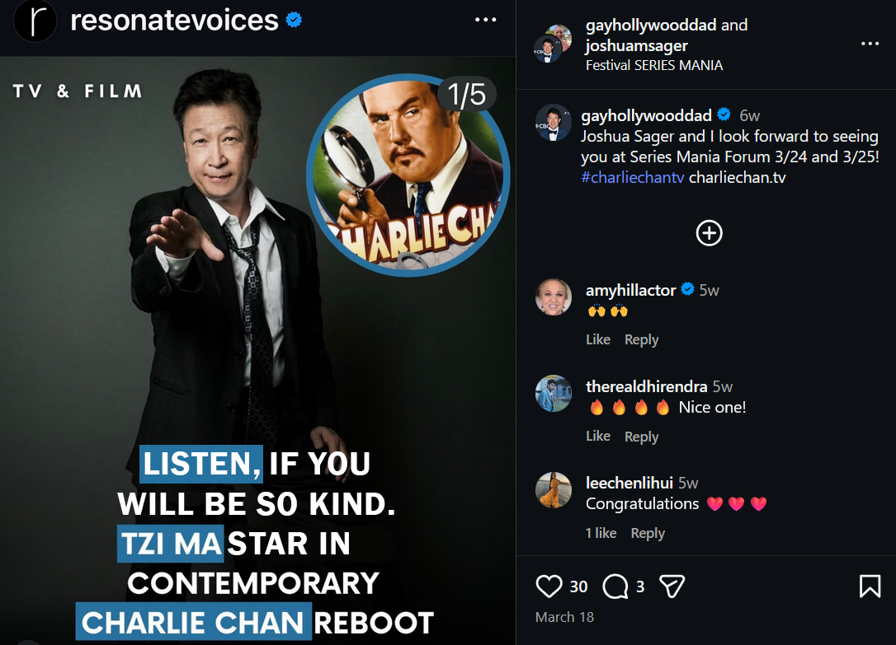
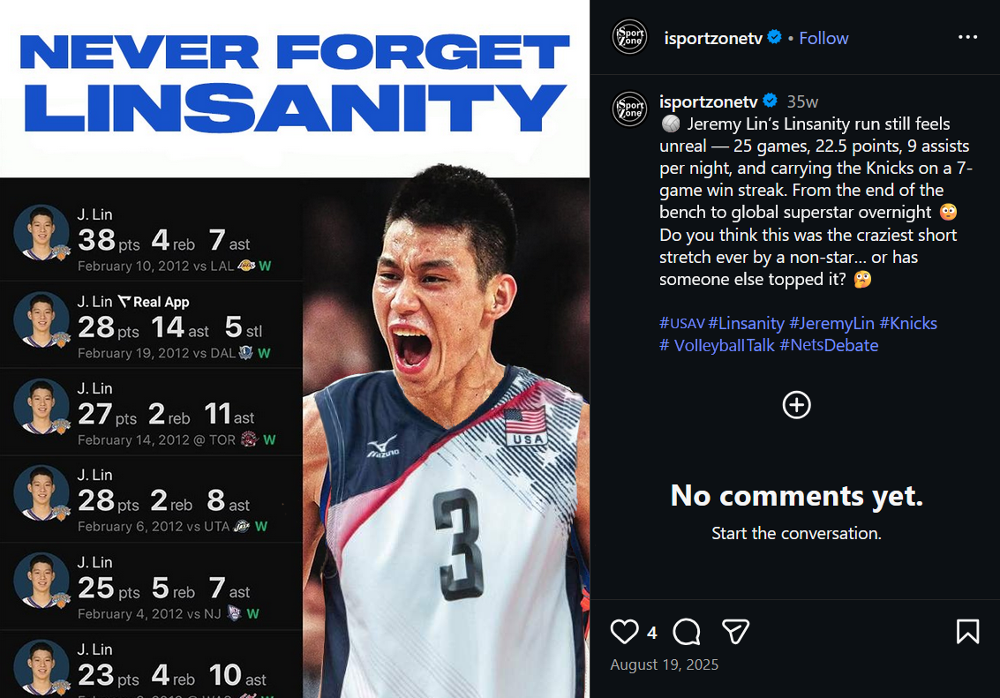

In the last few decades, the Asian American identity appears to have made significant progress towards full-fledged acceptance by wider society; however, this outlook is only on the surface of American culture, only the most convenient details are brought to mainstream attention. With the onset of social media, this comfortable narrative is further spread. What is shared onto feeds is the most sanitized version of Asian American achievements, and their difficult contexts are left behind. By subtly reintroducing these contexts back into social media posts, I subvert our understanding of how Asian Americans are treated within the country.

Dim sum includes a variety of small dishes and has become a popular example of Chinese cuisine online, with the exception of one. This dish is chicken feet, which has been digitally added throughout the image. This is based on a story from my Vietnamese dad, who had taken his White co-worker out for dim sum on a business meal. My dad had ordered chicken feet, and upon returning to the workplace, my dad's co-worker decided to spout to the whole office about how my dad eats chicken feet.

In American fiction, Charlie Chan was an Asian American character characterized by intelligent thoughts expressed through broken English and exaggerated politeness. As such, the original image has been modified to match Chan's historical demeanor. While historically Chan was an example of the "model minority," I hope for future interpretations to recognize this characterization and reclaim Chan for Asian American representation.

Jeremy Lin is a now retired NBA basketball player who produced a standout career wuth the New York Knicks while representing Asians in a league where Asians are a clear minority. While celebrated and respected throughout his NBA career, Lin was not without racial profiling. When attempting to enter a stadium to play his game, a security guard confronted Lin, saying that today basketball was being played, not volleyball.